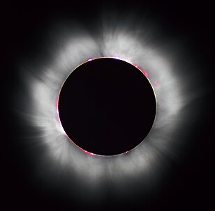
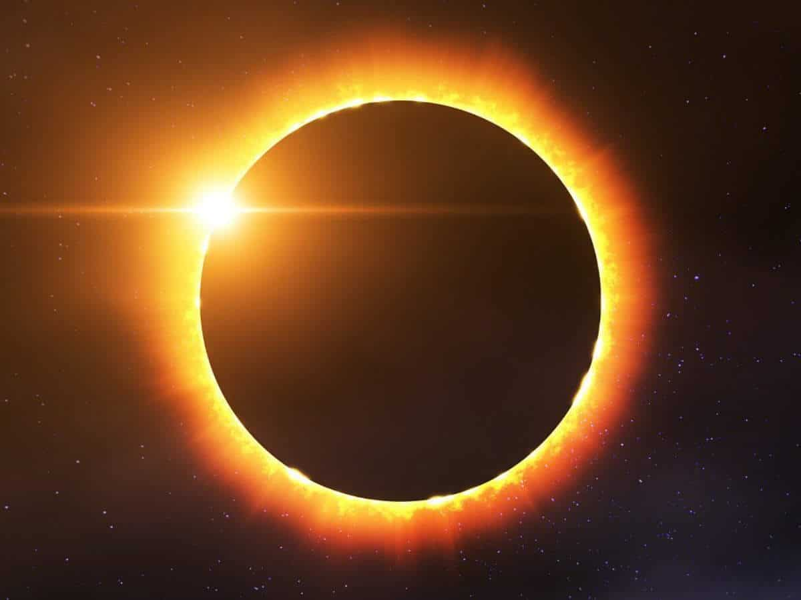
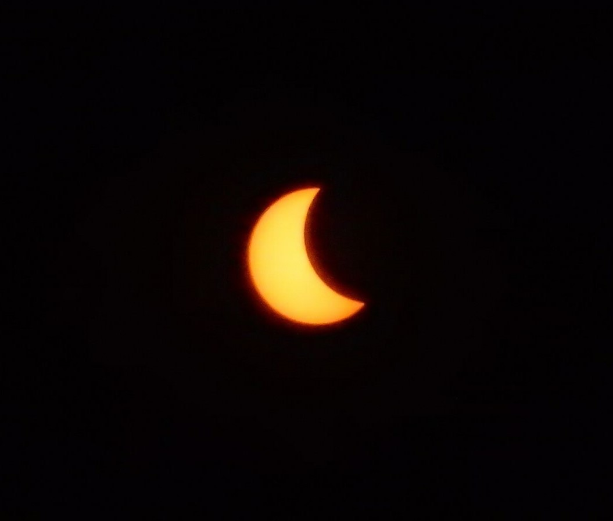
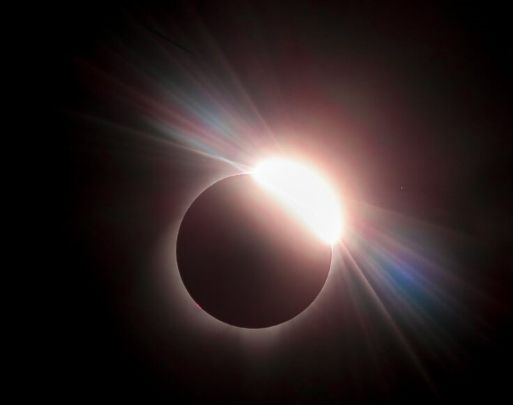

If you want to learn more about the moon phases, events and much more then check this page
Anywhere from four to seven times a year, our Earth, Moon and Sun line up just right to create the
cosmic-scale shadow show known as an eclipse. The Moon's orbit around Earth is tilted relative to
Earth's orbit around the Sun. This tilt is the reason why we have occasional eclipses instead of
eclipses every month.
There are two types of eclipses: lunar and solar. During a lunar eclipse, Earth’s shadow obscures the
Moon. During a solar eclipse, the Moon blocks the Sun from view.
Lunar eclipses occur at the full moon phase. When Earth is positioned precisely between the Moon and
Sun, Earth’s shadow falls upon the surface of the Moon, dimming it and sometimes turning the lunar
surface a striking red over the course of a few hours. Each lunar eclipse is visible from half of Earth.
There are three different types of lunar eclipses:

|
Total lunar eclipseThe Moon moves into the inner part of Earth’s shadow, or the umbra. Some of the sunlight passing through Earth’s atmosphere reaches the Moon’s surface, lighting it dimly. Colors with shorter wavelengths ― the blues and violets ― scatter more easily than colors with longer wavelengths, like red and orange. Because these longer wavelengths make it through Earth’s atmosphere, and the shorter wavelengths have scattered away, the Moon appears orangish or reddish during a lunar eclipse. The more dust or clouds in Earth’s atmosphere during the eclipse, the redder the Moon appears. |

|
Partial lunar eclipseAn imperfect alignment of Sun, Earth and Moon results in the Moon passing through only part of Earth's umbra. The shadow grows and then recedes without ever entirely covering the Moon. |

|
Penumbral eclipseIf you don’t know this one is happening, you might miss it. The Moon travels through Earth’s penumbra, or the faint outer part of its shadow. The Moon dims so slightly that it can be difficult to notice. |
A lunar eclipse occurs when the Sun, Earth, and Moon align so that the Moon passes into Earth’s shadow. The Moon becomes darker and may even turn red. Credit: NASA Goddard Space Flight Center.
Solar eclipses happen only at the new moon phase, when the Moon is between Earth and the Sun. During a
solar
eclipse, the Moon casts a shadow on Earth, and blocks or partially blocks our view of the Sun. Though
solar
eclipses happen as often as lunar eclipses, they are visible from such a small area of Earth each time
that
it’s much rarer to encounter one.
There are four different types of solar eclipses:

|  |
Total Solar EclipseA total solar eclipse happens when the Moon passes between the Sun and Earth, completely blocking the face of the Sun. People located in the center of the Moon’s shadow when it hits Earth will experience a total eclipse. The sky will darken, as if it were dawn or dusk. Weather permitting, people in the path of a total solar eclipse can see the Sun’s corona, the outer atmosphere, which is otherwise usually obscured by the bright face of the Sun. A total solar eclipse is the only type of solar eclipse where viewers can momentarily remove their eclipse glasses (which are not the same as regular sunglasses) for the brief period of time when the Moon is completely blocking the Sun. |
|  |
Annular Solar EclipseAn annular solar eclipse happens when the Moon passes between the Sun and Earth, but when it is at or near its farthest point from Earth. Because the Moon is farther away from Earth, it appears smaller than the Sun and does not completely cover the Sun. As a result, the Moon appears as a dark disk on top of a larger, bright disk, creating what looks like a ring around the Moon. |
|  |
Partial Solar EclipseA partial solar eclipse happens when the Moon passes between the Sun and Earth but the Sun, Moon, and Earth are not perfectly lined up. Only a part of the Sun will appear to be covered, giving it a crescent shape. During a total or annular solar eclipse, people outside the area covered by the Moon’s inner shadow see a partial solar eclipse. |
|  |
Hybrid Solar EclipseBecause Earth's surface is curved, sometimes an eclipse can shift between annular and total as the Moon’s shadow moves across the globe. This is called a hybrid solar eclipse. |